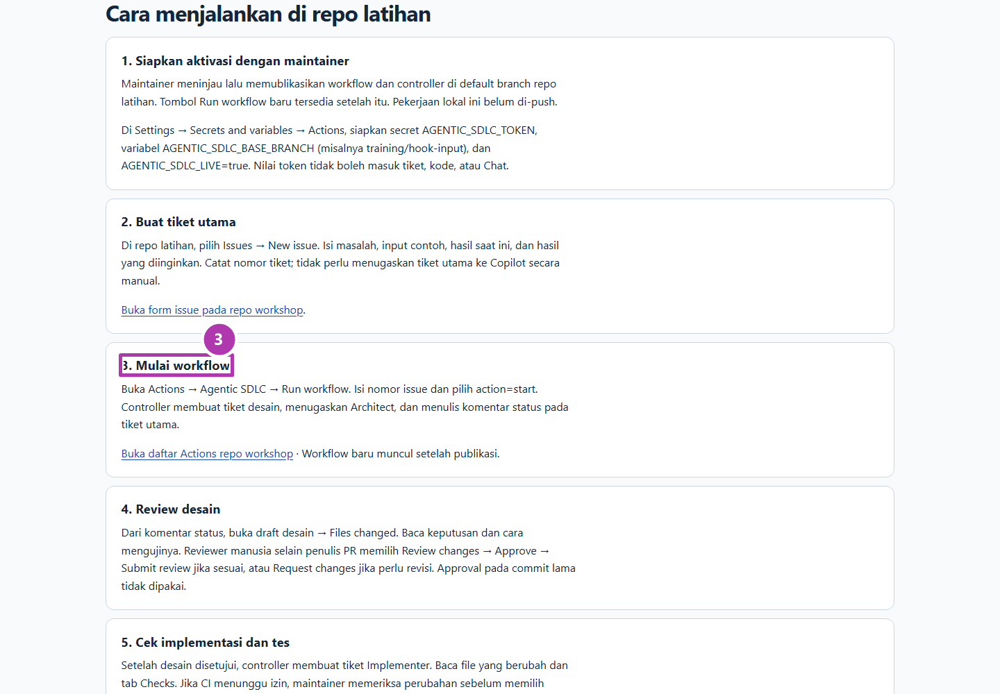
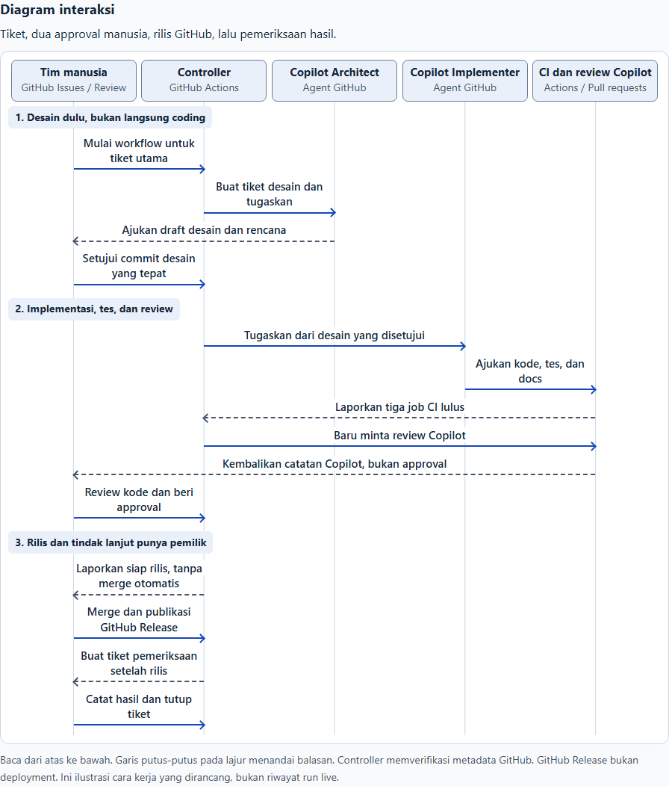
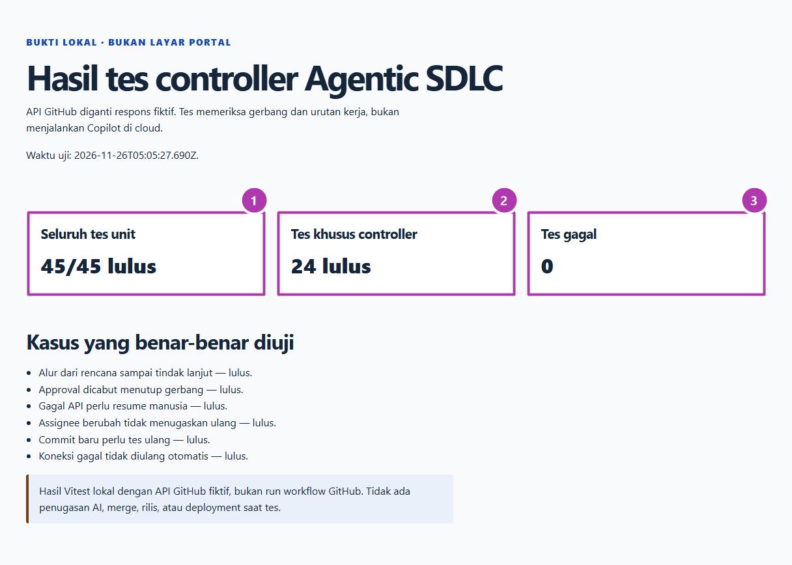

Alur yang bisa dijalankan · GitHub Actions
Satu tiket, dari rencana sampai tindak lanjut
Kamu tulis masalah. Workflow menghubungkan Copilot Architect, Implementer, tes, dan review. Manusia tetap menyetujui desain, kode, dan rilis.
Status: dibuat dan diuji lokal dengan respons GitHub fiktif. Belum diaktifkan atau diuji live. Membuka halaman ini tidak memulai pekerjaan AI.
Siapa mengerjakan apa?
Diagram interaksi
Tiket, dua approval manusia, rilis GitHub, lalu pemeriksaan hasil.
1. Desain dulu, bukan langsung coding
-
Tim manusiaGitHub Issues / Review keControllerGitHub Actions
-
ControllerGitHub Actions keCopilot ArchitectAgent GitHub
-
Copilot ArchitectAgent GitHub keTim manusiaGitHub Issues / Review
-
Tim manusiaGitHub Issues / Review keControllerGitHub Actions
2. Implementasi, tes, dan review
-
ControllerGitHub Actions keCopilot ImplementerAgent GitHub
-
Copilot ImplementerAgent GitHub keCI dan review CopilotActions / Pull requests
-
CI dan review CopilotActions / Pull requests keControllerGitHub Actions
-
ControllerGitHub Actions keCI dan review CopilotActions / Pull requests
-
CI dan review CopilotActions / Pull requests keTim manusiaGitHub Issues / Review
-
Tim manusiaGitHub Issues / Review keControllerGitHub Actions
3. Rilis dan tindak lanjut punya pemilik
-
ControllerGitHub Actions keTim manusiaGitHub Issues / Review
-
Tim manusiaGitHub Issues / Review keControllerGitHub Actions
-
ControllerGitHub Actions keTim manusiaGitHub Issues / Review
-
Tim manusiaGitHub Issues / Review keControllerGitHub Actions
Delapan tahap dengan keluaran jelas
- Tiket · Manusia. Tulis masalah dan syarat hasil.
- Rencana · Copilot Architect. Ajukan catatan desain dan daftar pekerjaan.
- Approval desain · Reviewer manusia. Setujui versi desain yang sedang diperiksa.
- Implementasi · Copilot Implementer. Ajukan kode, tes, dan dokumentasi dalam draft terpisah.
- Pemeriksaan · GitHub Actions. Uji di Jakarta, Los Angeles, dan browser.
- Review · Copilot dan manusia. Copilot memberi catatan; manusia mengambil keputusan.
- Rilis · Manusia. Merge dan publikasi rilis tetap dilakukan manusia.
- Tindak lanjut · Workflow dan manusia. Buat tiket pemeriksaan setelah rilis; manusia memeriksa hasil.
Contoh tiket: “Klaim Taksi bandara Rp250.000 bertanggal besok masih tersimpan. Besok harus ditolak; hari ini tetap diterima.” Pakai contoh kecil dan data fiktif.
Cara menjalankan di repo latihan
1. Siapkan aktivasi dengan maintainer
Maintainer meninjau lalu memublikasikan workflow dan controller di default branch repo latihan. Tombol Run workflow baru tersedia setelah itu. Pekerjaan lokal ini belum di-push.
Di Settings → Secrets and variables → Actions, siapkan secret AGENTIC_SDLC_TOKEN, variabel AGENTIC_SDLC_BASE_BRANCH (misalnya training/hook-input), dan AGENTIC_SDLC_LIVE=true. Nilai token tidak boleh masuk tiket, kode, atau Chat.
2. Buat tiket utama
Di repo latihan, pilih Issues → New issue. Isi masalah, input contoh, hasil saat ini, dan hasil yang diinginkan. Catat nomor tiket; tidak perlu menugaskan tiket utama ke Copilot secara manual.
3. Mulai workflow
Buka Actions → Agentic SDLC → Run workflow. Isi nomor issue dan pilih action=start. Controller membuat tiket desain, menugaskan Architect, dan menulis komentar status pada tiket utama.
Buka daftar Actions repo workshop · Workflow baru muncul setelah publikasi.
4. Review desain
Dari komentar status, buka draft desain → Files changed. Baca keputusan dan cara mengujinya. Reviewer manusia selain penulis PR memilih Review changes → Approve → Submit review jika sesuai, atau Request changes jika perlu revisi. Approval pada commit lama tidak dipakai.
5. Cek implementasi dan tes
Setelah desain disetujui, controller membuat tiket Implementer. Baca file yang berubah dan tab Checks. Jika CI menunggu izin, maintainer memeriksa perubahan sebelum memilih Approve and run. Itu bukan approval kode.
Controller meminta review Copilot hanya setelah Jakarta, Los Angeles, dan browser lulus pada commit yang sama. Jika merah, minta revisi; workflow tidak menghapus tes atau memicu sesi perbaikan berulang.
6. Beri keputusan manusia
Baca catatan Copilot dan coba input contoh. Reviewer manusia memberi approval pada commit implementasi terbaru. Approval bot atau penulis PR sendiri tidak membuka gerbang. Status berikutnya release-ready.
7. Rilis hanya jika diizinkan
Controller tidak menekan Merge atau Publish release. Latihan utama boleh berhenti di release-ready. Jika repo turunan memang diizinkan untuk rilis, manusia merge lalu membuat GitHub Release dengan tag tepat pada commit hasil merge.
Deployment memerlukan hosting, lingkungan, dan izin terpisah. Rilis GitHub tidak membuktikan aplikasi sudah tersedia di server.
8. Periksa hasil setelah rilis
Workflow membuat tiket pemeriksaan setelah menemukan rilis yang cocok. Manusia mencoba aplikasi yang benar-benar dipasang, mencatat hasil smoke test dan kontrak API, lalu menutup tiket. completed hanya membuktikan tiket ditutup manusia; hasil uji harus dibaca di tiket.
Lihat screenshot instruksi mulai


Perbesar SDLC-02-mulai-annotated.pngNomor 3: setelah aktivasi disetujui, isi nomor issue dan action=start. Gambar ini memotret teks panduan lokal, bukan layar Actions yang sudah dijalankan.
Kalau status berhenti
Baca komentar Workflow Agentic SDLC di tiket utama. Di situ ada tahap sekarang dan tautan tiket desain, PR, serta CI.
- plan-review
- Menunggu approval manusia untuk commit desain terbaru.
- checks
- Tiga job CI belum lulus pada commit yang tepat. Baca job merah.
- review
- Menunggu catatan Copilot atau approval manusia. Keduanya berbeda.
- blocked
- Periksa pesan API, izin, atau lingkup file. Setelah sebab diselesaikan, maintainer memilih action=resume. Tidak ada retry AI otomatis.
- Kejadian terlewat
- Pilih action=advance untuk tiket yang sama. Controller mencocokkan status, PR, CI, dan rilis tanpa membuat tugas ganda. action=status hanya membaca.
Jika desain berubah setelah implementasi dimulai, jangan meloloskan pekerjaan lama. Hentikan tiket lama dan rencanakan kembali tugas yang sempit.
Akses, biaya, dan batas
AGENTIC_SDLC_TOKEN adalah token pengguna dengan akses repo dan Copilot yang sesuai. Token Actions standar tidak cukup untuk penugasan cloud agent. Dokumentasi API assignment meminta Metadata read serta Actions, Contents, Issues, dan Pull requests read/write pada repo yang dipilih. Review juga bergantung pada paket, kebijakan, dan kuota akun.
Sumber resmi API penugasan Copilot · Sumber resmi API review Copilot.
Tidak ada angka biaya live untuk workflow ini. Batas controller adalah dua penugasan otomatis dan tiga permintaan review per tiket, bukan batas nilai tagihan. Revisi manual dapat memakai kredit tambahan. Tidak ada jadwal berulang.
Controller membaca kode sendiri dari default branch tepercaya dan tidak menjalankan kode atau artefak PR. Ia mencocokkan commit, identitas reviewer, scope file, dan CI. Implementasi tidak boleh mengubah workflow atau hook.
Coba alur lokal tanpa meminta AI
Jalankan tes dengan respons GitHub fiktif. Kasusnya meliputi seluruh urutan, approval dicabut, commit baru, API gagal, dan pencegahan tugas ganda.
npm test -- sdlc-workflow.test.jsIni menguji controller, bukan membuktikan token atau run cloud berhasil. Rencana implementasi (berkas lokal) dan keputusan desain (berkas lokal).
Cek hasil
Tes lokal dijalankan pada 2026-11-26T05:05:27.690Z. Nomor pada screenshot hasil tes berarti:
- 1. Seluruh tes unit: 45/45 lulus, termasuk tes aplikasi yang sudah ada.
- 2. Tes khusus controller: 24 lulus dengan respons API GitHub fiktif.
- 3. Tes gagal: 0. Ini bukan jumlah run GitHub.
Contoh kasus yang lulus
- Alur dari rencana sampai tindak lanjut.
- Approval dicabut menutup gerbang.
- Gagal API perlu resume manusia.
- Assignee berubah tidak menugaskan ulang.
- Commit baru perlu tes ulang.
- Koneksi gagal tidak diulang otomatis.
Lulus tes lokal belum membuktikan akses akun, model Copilot, kuota, atau workflow live berhasil. Tidak ada penugasan AI, merge, rilis, atau deployment selama tes ini.
Bukti dan sumber
Tiga adegan lokal memakai format dokumentasi yang sama: thumbnail kecil, klik untuk memperbesar, caption sumber, serta kotak bernomor jika ada tindakan atau hasil yang perlu ditunjuk. File asli tetap disimpan.


Perbesar SDLC-01-alur.png

Perbesar SDLC-03-tes-lokal-annotated.pngGambar tanpa kotak: instruksi mulai dan hasil tes lokal. Data sumber, waktu uji, dan kondisi bukti memuat catatan sdlcEvidence.


Belum diuji di GitHub
Berikut bukti yang masih perlu diambil setelah publikasi dan aktivasi disetujui. Tidak diganti dengan screenshot PR latihan lain.
- GitHub Actions dan tiket utama. Setelah maintainer menyetujui publikasi, akses, dan biaya, isi nomor issue serta action=start. Rekam run nyata dan komentar status yang mengarah ke tiket desain.
SDLC-live-01-start.png - PR desain dan komentar status. Rekam file desain, approval reviewer manusia pada commit terbaru, dan tiket Implementer yang dibuat sesudah approval itu.
SDLC-live-02-plan.png - Checks dan review pada PR implementasi. Rekam tiga job CI lulus, catatan Copilot, dan approval manusia pada commit yang sama. Jangan memakai run dari PR lain.
SDLC-live-03-checks-review.png - GitHub Release dan tiket pemeriksaan hasil. Hanya di repo turunan dengan izin rilis: rekam rilis manusia pada commit hasil merge dan tiket tindak lanjut yang cocok. Jika latihan berhenti di release-ready, bagian ini tetap pending; GitHub Release bukan deployment.
SDLC-live-04-follow-up.png